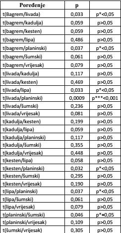

Izvršena su poređenja prosječnih vrijednosti antioksidativnih aktivnosti, različitih vrsta pčelinjeg meda, neovisno o godini proizvodnje, lokaciji i proizvođaču. Prosječne vrijednosti različitih vrsta meda prikazane su u Tabeli.
|
Prosječne vrijednosti antioksidativnih aktivnosti različitih vrsta meda izuzev mješovitih |
Prilikom poređenja korišten je dvosmjerni t-test.
|
T-test za određivanu antioksidativnu aktivnost u uzorcima pčelinjeg meda  |
- Studentov t-test je pokazao da su prosječne vrijednosti AA planinskog meda statistički značajno više u odnosu na AA uzoraka livadskog meda (p***<0,001). Za pet poređenja statistički t-test je pokazao značajne statističke razlike u prosječnim vrijednostima AA (p*<0,05). Prosječne vrijednosti AA livadskog i planinskog meda su statistički značajno više u odnosu na AA uzoraka bagremovog i lipovog meda (p*<0,05), a također je prosječna vijednost AA planinskog meda statistički značajno viša u odnosu na kestenov med.
- Planinski med je imao višu prosječnu vrijednost AA u odnosu na šumski med, ali Studentov t-test je pokazao da je ta razlika na granici statističke značajnosti (p=0,05).
- Studentov t-test je pokazao da za preostala poređenja prosječnih vrijednosti AA statistički nije bilo značajne razlike (p>0,05).
- Također, poređenje šumskih vrsta (kestenovog, lipovog, bagremovog, šumskog i planinskog meda) sa livadskim vrstama (kaduljinog, vrijeskovog, livadskog) nije pokazalo statistički značajnu razliku prosječnih vrijednosti AA.
- Istim testom je vršeno i statističko poređenje AA određenih vrsta pčelinjeg meda po godini proizvodnje. Pokazalo se da nije bilo statistički značajne razlike (p>0,05) u prosječnim vrijednostima AA za tri različite godine proizvodnje (2013, 2014, 2015)